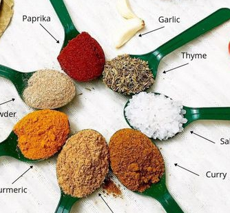

Jollof Rice
40 minutes
Easy
| Ingredient Image | Ingredient Name | Ingredient Measure |
|---|---|---|
| Rice | 3 cups | |
| Bay Leaf | 2 leaves | |
| Carrot | As wanted | |
| Ginger | 1/4 teaspoon | |
| Onions | 2 | |
| Pepper | 1 each | |
|  | Powdered Ingredients | 1 teaspoon each |
| Tomatoes | 500ml chopped tomatoes |
Procedure
- Blend your tomatoes, scotch bonnet, and tatashe together.
- Put your rice into a bowl and soak with hot water.Allow this to soak for 10-15 minutes. Then, wash with warm water and keep aside, or parboil your rice and wash. This is important as you will get rid of excess starch in the rice.
- Heat up your oil.
- Add your chopped onions and allow them to fry.
- Add and fry your blended ingredients and purée.Allow them to fry until you get rid of the sour taste (about 10-15 minutes).
- Add your maggi, garlic, ginger, curry, thyme and salt.Mix it all together. Be careful with your maggi as you do not want it too salty (2 maggi cubes for a cup of rice). Add your stock or water, and mix too. Taste to adjust to any seasoning.
- Pour your rice into the pot and mix together.
- Cook on low medium heat.Check your rice after at least 10 minutes, using a wooden spatula to dip into the rice. This helps with getting the sauce to get the bottom of the pot, so that it does not start burning when the rice is not cooked.
- Cook until soft.Do not overcook your rice or get your rice too soggy. When rice is soft, lower the heat and allow to simmer so the water will get completely dry.
- Serve the rice.
Serve with anycombination of food and your choice of meat, if desired.